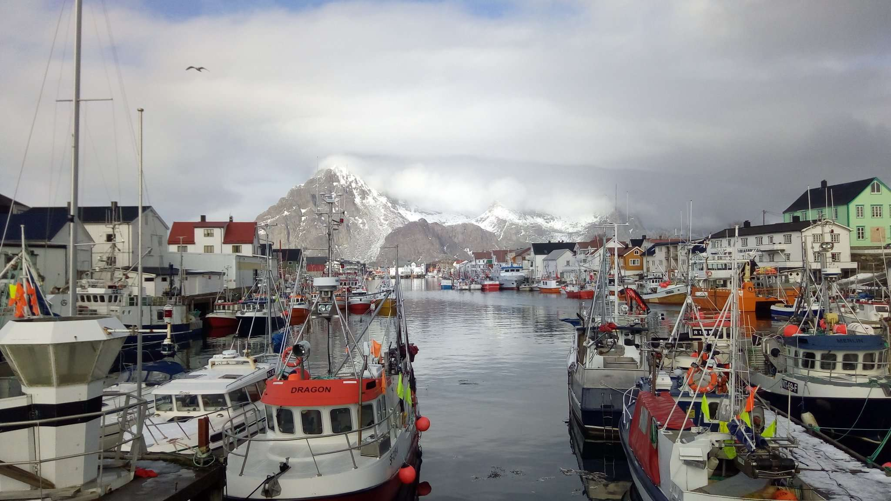
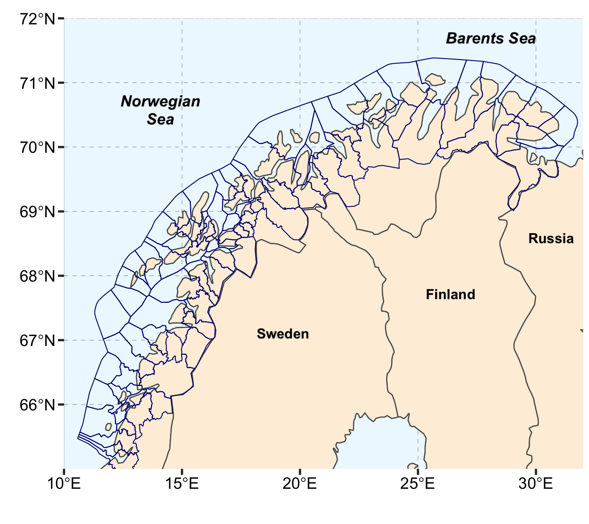

Ocean Health Index for northern Norway
2020-03-10
1 About the project

The growth in the blue economy is changing coastal ecosystems and communities in northern Norway. To guide ecosystem-based management, decision-makers need measures of ocean health and an analyzis of how industrial development affects sustainability of the human-ocean interactions.
The Ocean Health Index for Northern Norway (Coastal barometer) proposes a set of sustainability indicators that are measuring
the progress towards societal sustainability goals related to the coast, and evaluates the effect of coastal industries on these sustainability goals.
The study area of the project covers 81 coastal municipalities in northern Norway: <<<<<<< HEAD 
=======04a09f65687f4fdf689d5b6277a17a2ad0b35a7c
To learn more about the project, please visit our blogg.
<<<<<<< HEAD # Food provision goal {#food}
1.1 Aquaculture sub-goal
Aquacultue index measures sustainable production of farmed fish in northern Norway. The table below explains the structure of aquacuture goal: the components of the goal and the data layers used to estimate them. ======= — output: word_document: default html_document: default pdf_document: default — # Food provision goal {#food}
1.2 Aquaculture sub-goal
Aquaculture index measures sustainable production of farmed fish in northern Norway. The table below explains the structure of aquaculture goal: the components of the goal and the data layers used to estimate them.
| Component of the goal | Data layers description | Temporal coverage | Data source |
|---|---|---|---|
| Production | Standing biomass of salmon and trout per municipality each month; amount of fish lost during the production | 2005-2018 | The Fisheries Directorate of Norway |
| Fish lost during production | Amount of fish died, escaped or lost due to other reasons during production each year | 2005-2018 | The Fisheries Directorate of Norway |
<<<<<<< HEAD |Lice abundance|Average lice abundane at a farm, compared to thresholds abundance|2005-2018|Norwegian Marine Data Center, Barentswatch.no portal| |MOM B examinations|The category of environmental impact at a farm from very good (1) to bery bad (4)|2005-2018|The Fisheries Directorate of Norway| ======= |Lice abundance|Average lice abundance at a farm, compared to thresholds abundance|2005-2018|Norwegian Marine Data Center, Barentswatch.no portal| |MOM B examinations|The category of environmental impact at a farm from very good (1) to very bad (4)|2005-2018|The Fisheries Directorate of Norway| >>>>>>> 04a09f65687f4fdf689d5b6277a17a2ad0b35a7c |Economic feed conversion ratio (eFCR) |Consumption of feed per municipality each year|2005-2015|The Fisheries Directorate of Norway|
1.2.1 Estimating sustainable aquacultlure
<<<<<<< HEAD Aquaculutre goal consists of two components: total production and sustainability indices. When both components are calculated, they are combined into the amout of aquacutllure production (in tonns og kg) produced sustainably.
 Below is the description of each component of the aquaculture sub-goal.
Below is the description of each component of the aquaculture sub-goal.
Annual production We caclulated total annual aquaculture production per municipality, as follows: \(Tot.prod = \triangle Biomass + Harvest - Discard - Seeded\ smolts\)
Biomass change and harvest were corrected for slaugher weight, by multiplying their weight by 0.88. The weight of smolts was assumed to be 100 gramms, and the weight of discarded salmon - 5x0.88 = 4.4 kg.
Where, \(\triangle Biomass\) is the difference of standing biomass of fish in December of the given year minus December of the previous year, \(Harvest\) is biomass of fish harvested (kg); \(Seeded\ smolts\) is the biomass of smolts (kg), seeded for production at the beginning of the production cycle; \(Discard\) is the biomass of fish (kg) discarded at the slaughter plant, and Removed is the biomass of fish (kg) removed from the cages for slaughtering at another location or for other reasons
\(\triangle Biomass\) is the difference between standing biomass of fish in Desember of a given year minus standing biomass in Desember of the previous year. When it was not possible to subtract standing biomass of the previous year, for instance, when there was no fish in the cages at the end of the previous year, we calculated the difference between earliest and latest month of the give year, when there were fish in the cages.
For some municipalities, the total annual aquacultlure production was negative, due to underestimnation of fish biomass. In these cases, the total production was set to a missing value (NA). These missing values were replaced with a nearest observed produciton (either of the previous or of the following year). Of the 81 coastal municipalities in Northern Norway, 10 did not have aquaculture in any of the studied years (2005 - 2018): ======= Aquaculture goal consists of two components: total production and sustainability indices. When both components are calculated, they are combined into the amount of aquaculture production (in tons or kg) produced sustainably.
Figure 1: The structure of Aquaculture sub-goal
Below is the description of each component of the aquaculture sub-goal.
Annual production We calculated total annual aquaculture production per municipality, as follows: \[\begin{equation} Tot.prod = \triangle Biomass + Harvest - Discard - Seeded\ smolts \tag{1} \end{equation}\]
Biomass change and harvest were corrected for slaughter weight, by multiplying their weight by 0.88. The weight of smolts was assumed to be 100 grams, and the weight of discarded salmon - 5x0.88 = 4.4 kg.
Where, \(\triangle Biomass\) is the difference of standing biomass of fish in December of the given year minus December of the previous year, \(Harvest\) is biomass of fish harvested (kg); \(Seeded\ smolts\) is the biomass of smolts (kg), seeded for production at the beginning of the production cycle; \(Discard\) is the biomass of fish (kg) discarded at the slaughter plant, and Removed is the biomass of fish (kg) removed from the cages for slaughtering at another location or for other reasons
\(\triangle Biomass\) is the difference between standing biomass of fish in December of a given year minus standing biomass in December of the previous year. When it was not possible to subtract standing biomass of the previous year, for instance, when there was no fish in the cages at the end of the previous year, we calculated the difference between earliest and latest month of the give year, when there were fish in the cages.
For some municipalities, the total annual aquaculture production was negative, due to underestimation of fish biomass. In these cases, the total production was set to a missing value (NA). These missing values were replaced with a nearest observed production (either of the previous or of the following year). Of the 81 coastal municipalities in Northern Norway, 10 did not have aquaculture in any of the studied years (1994 - 2018): >>>>>>> 04a09f65687f4fdf689d5b6277a17a2ad0b35a7c
- Andoy
- Berlavag
- Hemnes
- Malselv
- Prosanger
- Rost
- Tana
- Vado
- Vaeroy
- Vardo
<<<<<<< HEAD For code on estimation of aquaculture produciton, please ======= For code on estimation of aquaculture production, please >>>>>>> 04a09f65687f4fdf689d5b6277a17a2ad0b35a7c see here.
Economic feed conversion ratio (eFCR) <<<<<<< HEAD
Economic feed conversion ratio (eFCR) is the ratio of the amount of feed used during the produciton of fish, to the final biomass of fish released to the market (Boyd et al. 2007).
\(eFCR = \frac{Feed \ used,\ kg}{Biomass\ produced,\ kg}\)
We calculated eFCR as a ratio of total feed used for production in a county (Norwegian “fylke”), to the total biomass of fish produced annually in the county. The total feed consumption and total biomass produced per region were calculated as a sum of feed consumption and produced biomass of all municipalities within the county.
======= Economic feed conversion ratio (eFCR) is the ratio of the amount of feed used during the production of fish, to the final biomass of fish released to the market (Boyd et al. 2007).
\[\begin{equation} eFCR = \frac{Feed \ used,\ kg}{Biomass\ produced,\ kg} \tag{2} \end{equation}\]
We calculated eFCR as a ratio of total feed used for production in a county (Norwegian “fylke”), to the total biomass of fish produced annually in the county. The total feed consumption and total biomass produced per region were calculated as a sum of feed consumption and produced biomass of all municipalities within the county.
To calculate eFCR-based sustainability indicator, we compared eFCR between the northern Norwegian counties for each year. The municipalities, located in the county with the lowest eFCR got the highest score, and the other counties, and municipalities located in them, eFCR score was calculated as 1 minus percentage of difference between the given county’s eFCR and the minimal observed eFCR that year. >>>>>>> 04a09f65687f4fdf689d5b6277a17a2ad0b35a7c
Lice prevalence
High lice prevalence at the aquaculture production site can cause a decrease in production rate and can also cause a higher lice infection pressure on wild salmonids (Bjørn, Finstad, and Kristoffersen 2001; Nilsen et al. 2017). In this study, we used a lice indicator developed by the Norwegian Food Authority (www.Mattilsynet.no), which compares the average abundance of lice reported weekly, with a threshold abundance of lice. In northern Norway, the threshold abundance of lice is set to be 0.5 lice per fish for all weeks, except weeks 21 to 26, when the thresholds is lowered to 0.2 (FOR-2012-12-05-1140).
<<<<<<< HEAD Based on the lice monitoring by the Norwegian Food authority, we formulated indicator for our study in the following way. For the highest lice sustainability score over a year, each municipality should have lower than the threshold lice count throughout a year. In other words, the target of lice sustainability index is to keep lice under control at any time during the production cycle. For each produdction site, we estimated the proportion of weeks in a year when lice abundance is below a threshold and averaged this estimate for all locations within a single municipality. Thus, when all the aquaculture locations in a municipality in a given year were below lice threshold during all 53 weeks of a year, the municipality scored 1 for the lice indicator. Conversely, a small number of weeks when abundance of lice at production sites was below threshold resulted in a lower score.
References
Bjørn, PA, B Finstad, and R Kristoffersen. 2001. “Salmon Lice Infection of Wild Sea Trout and Arctic Char in Marine and Freshwaters: The Effects of Salmon Farms.” Aquaculture Research 32 (12): 947–62.
Boyd, Claude E, Craig Tucker, Aaron McNevin, Katherine Bostick, and Jason Clay. 2007. “Indicators of Resource Use Efficiency and Environmental Performance in Fish and Crustacean Aquaculture.” Reviews in Fisheries Science 15 (4): 327–60.
Nilsen, Frank, Ingrid H Ellingsen, Bengt Finstad, and Peder A Jansen. 2017. “Vurdering Av Lakselusindusert Villfiskdødelighet Per Produksjonsområde I 2016 Og 2017. Rapport Fra Ekspertgrupper for Vurdering Av Lusepåvirkning.”
Bjørn, PA, B Finstad, and R Kristoffersen. 2001. “Salmon Lice Infection of Wild Sea Trout and Arctic Char in Marine and Freshwaters: The Effects of Salmon Farms.” Aquaculture Research 32 (12): 947–62.
Boyd, Claude E, Craig Tucker, Aaron McNevin, Katherine Bostick, and Jason Clay. 2007. “Indicators of Resource Use Efficiency and Environmental Performance in Fish and Crustacean Aquaculture.” Reviews in Fisheries Science 15 (4): 327–60.
Nilsen, Frank, Ingrid H Ellingsen, Bengt Finstad, and Peder A Jansen. 2017. “Vurdering Av Lakselusindusert Villfiskdødelighet Per Produksjonsområde I 2016 Og 2017. Rapport Fra Ekspertgrupper for Vurdering Av Lusepåvirkning.”